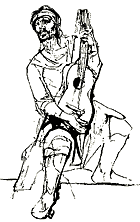
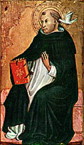

Viernes; termina enero. Me gusta la fecha para cortar esto. Por un tiempo, al menos. Modesto ejercicio de desapego, entre otras cosas. Supongo que para principio de marzo estaré de vuelta (puede ser antes, después o nunca).
Esto vendrá combinado -espero- con menos Internet. Pero seguiré consultando el correo cada tanto, y los comentarios; así que los lectores que quieran decir algo (qué les pareció bien y qué mal; que pondrían o sacarían, etc) quedan invitados.
Hasta la vista.
debe romperse antes el espejo:
la luz de la creación es su reflejo
pero es luz reflejada poco clara.
Antes debe caer la luna avara
engañador espejo circunflejo
debe llegar la noche con su dejo
de silencio total y muerte rara.
El sol es soledad; su pura llama
insoportable a la mortal mirada
pide ciegos; romper debe la trama
quien quiera ver detrás... detrás no hay nada
vacío, horror, enigma y criptograma,
la tiniebla increada...
Asimilable sólo a la purgada
oscura luz de la razón que ama.
Leonardo Castellani
Simone Weil: «Ser yo para Cristo lo que el lápiz es para mí cuando, con los ojos cerrados, siento su punta en contacto con la mesa. ».
-
Ejemplo de oración. Decir a Dios:
Padre, en el nombre de Cristo, concédeme esto:
Que sea incapaz de hacer corresponder a ninguna de mis voluntades ningún movimiento
del cuerpo, ni siquiera ningún intento de movimiento, como un paralítico total.
Que sea incapaz de recibir ninguna sensación, como una persona que estuviera
completamente ciega, sorda y privada de los otros sentidos.
Que sea incapaz de
relacionar con el menor vínculo dos pensamientos, ni siquiera los más simples, como
uno de esos idiotas totales que no sólo no saben ni contar ni leer, sino que ni
siquiera pudieron jamás aprender a hablar.
Que sea insensible a toda clase de dolor
y de alegría, e incapaz de ningún amor a ningún ser, a ninguna cosa, ni siquiera a
mí misma, como los ancianos completamente decrépitos.
Padre, en el nombre de Cristo, concédeme realmente todo esto.
Concédeme que este cuerpo se mueva o permanezca inmóvil,
con una flexibilidad o una rigidez
perfectas, en conformidad ininterrumpida con tu voluntad.
Que mi oído, mi vista, mi
gusto, mi olfato y mi tacto reciban la huella perfectamente exacta de tu creación.
Que esta inteligencia, en la plenitud de la lucidez, encadene todas las ideas en
perfecta conformidad con tu verdad.
Que esta sensibilidad experimente, en su
intensidad más grande posible y en toda su pureza, todos los matices del dolor y de
la alegría.
Que este amor sea una llama absolutamente devoradora de amor a Dios por
Dios.
Que todo esto sea arrancado de mí, devorado por Dios, transformado en
sustancia de Cristo y dado como alimento a los desdichados cuyo cuerpo y alma
carecen de todo tipo de alimento.
Y que yo sea paralítica, ciega, sorda, idiota y
decrépita.
Padre, realiza esta transformación ahora, en el nombre de Cristo; y aunque te lo pido con una fe imperfecta, concédeme esta súplica como si hubiera sido pronunciada con una fe perfecta.
Padre, ya que tú eres el Bien y yo soy mediocre, arranca de mí este cuerpo y esta alma para hacer de ellos cosas tuyas, y no dejes subsistir en mí, eternamente, más que este desgarramiento, o bien la nada.
( Estas palabras no tienen una virtud eficaz a menos que sean dictadas por el Espíritu. Semejantes cosas no se pueden pedir voluntariamente. Se llega a eso a pesar de uno mismo; a pesar de uno mismo, pero se consiente. No se consiente con abandono. Se consiente con una violencia ejercida sobre el alma entera por el alma entera. Pero el consentimiento es total y sin reserva, es un movimiento único de todo el ser. )
Simone Weil
En el santoral de hoy, San Juan Bosco (Don Bosco), cura italiano del siglo XIX, fundador de la congregación de los salesianos.
Cuentan que cuando estaba decidiendo su entrada a la vida religiosa, lo habló con su madre, y ella le dijo: " No tienes por qué preocuparte de mí. Nada quiero de ti, nada espero de ti. Tenlo siempre presente: nací pobre, he vivido pobre y quiero morir pobre. Más aún, te lo aseguro: si te decidieras por el clero secular y, por desgracia, llegaras a ser rico, ni una vez pondría los pies en tu casa. No lo olvides" . Y Don Bosco no lo olvidó: él mismo contaba esto, en su vejez.
Curiosidad que acabo de encontrar: es el patrono de los magos.
Releyendo la cita (atribución dudosa) de Ratzinger, aquello de que la única verdadera apología del cristianismo está en los santos y en la belleza que produce... pensaba en su aplicación al catolicismo argentino.
Dónde están los frutos de santidad (en los distintos niveles de la palabra) y las flores de belleza (artística, litúrgica, intelectual) que ha dado en estos siglos ?
Qué miseria... Es verdad que el país ha dado muy poco de frutos en todos los órdenes (al menos si comparamos con nuestras pretensiones y nuestra sofisticación); y ya que estamos, miro lo que debe ser al obra más alta y más íntegra de nuestra cultura -con perdón de la palabra-, ese pequeño milagro que es el Martín Fierro: dado que , en cierto plano, es un muestra auténtica de lo que somos, alguno podría querer buscar en sus páginas alguna muestra de lo que es (fue?) nuestro catolicismo: con qué se encontrará ? con las tías rezadoras de Picardía, y casi nada más.
Barajar y dar de nuevo, tienta a decir... Pero bueh... peor sería no tener ni siquiera el Martín Fierro.
Ansí me encontré de nuevo
sin saber dónde meterme;
y ya pensaba volverme,
cuando, por fortuna mía,
me salieron unas tías
que quisieron recogerme.
 Con aquella parentela,
para mí desconocida,
me acomodé ya en seguida;
y eran muy buenas señoras,
pero las más rezadoras
que he visto en toda mi vida.
Con el toque de oración
ya principiaba el rosario;
noche a noche un calendario
tenían ellas que decir,
y a rezar solían venir
muchas de aquel vecindario.
[...]
Esta me da con el pie,
aquella otra con el codo;
¡ah, viejas! por ese modo,
aunque de corazón tierno,
yo las mandaba al infierno
con oraciones y todo.
Otra vez, que como siempre
la parda me perseguía,
cuando yo acordé, mis tías
me habían sacao un mechón
al pedir la estirpación
de todas las herejías.
Aquella parda maldita
me tenía medio afligido,
y ansí, me había sucedido
que, al decir «estirpación»
le acomodé «entripación»,
y me cayeron sin ruido.
El recuerdo y el dolor
me duraron muchos días;
soñé con las herejías
que andaban por estirpar,
y pedía siempre al rezar,
la estirpación de mis tías.
Y dale siempre rosarios,
noche a noche sin cesar;
dale siempre barajar
salves, trisagios y credos;
me aburrí de esos enriedos
y al fin me mandé mudar.
Bien hecho!...
Monotemáticos (y mayestáticos) estamos... Bueh.
Leía recién el el blog de Mark Shea esto, recordando la maldición de Jesús a los ricos, y citando un estupendo texto de Chesterton sobre el tema de "los ricos" visto a la luz del cristianismo. Y sentí la tentación de meter un comentario, para ver cuántos católicos yanquis estarían dispuestos a pensar eso pasando del plano "persona" al plano "nación" ... etc. Pero lo dejé; me pareció difícil decir esto sin ser hiriente.
Después vi que no hacía falta; el mismo Mark dice algo de eso en los comentarios. Bien.
-
Lo que sale del hombre, eso es lo que contamina al hombre.
Porque de dentro, del corazón de los hombres, salen las intenciones malas: fornicaciones, robos, asesinatos, ...
Maldito el hombre que confía en el hombre, dice un salmo; mezclando las dos cosas, creo que no estaría mal decir "Maldito el hombre que confía en su corazón".
Y de todas maneras, es de creer que la lucidez para ver las mecánicas del alma (individual o social) se gana a través de un largo camino de ascesis... hace falta una especie de renunciamiento, de mortificación, que no está lejos de la santidad ; y esto no es algo específicamente cristiano; ser cristiano no es necesario (aunque ayude mucho) -ni de ninguna manera suficiente-.
Un aspecto del asunto son las relaciones de poder que
se dan entre alma y alma (y entre grupo y grupo,
clase y clase, nación y nación). Por una especie de mecanismo
fatal, (hijo de la caída; y que algunos idiotas pretenden
elevar a virtud: "autoafirmación personal" ) el alma
se inclina a adorar lo que la defiende: la fuerza.
En el mundo "natural", la fuerza es en verdad la
única ley; lo que se llama "justicia" no es más que
el equilibrio precario que se obtiene cuando las fuerzas
opuestas resultan iguales. Cuando no son iguales,
el fuerte domina y el débil obedece.
Mientras tanto, el corazón segrega los venenos correspondienes.
En el débil, genera "resentimiento" (y arman sus propias
doctrinas, el ídolo de la clase oprimida, la injusticia que contra
él se comete, y el sueño mentiroso de la igualdad
que vendría a remediar todo).
El fuerte se arma su propia doctrina de la justicia, que coincide
con la mecánica de su dominación.
-
La bestia social tiene una doctrina, la doctrina de la fuerza. Algunos atenienses, citados por Tucídides, la expresaron crudamente, con una claridad maravillosa, cuando dijeron a unos desdichados que les suplicaban: "Creemos con respecto a los dioses según la tradición y sabemos con respecto a los hombres por una experiencia indudable que siempre, por una necesidad de la naturaleza,
cada uno domina allí donde tiene poder". Se ve que esos atenienses eran adoradores recientes de la bestia, hijos de antepasados extraños a su culto; los verdaderos fieles de este culto casi no expresan la doctrina, sino es por la acción. Para justificar esta acción inventan idolatrías .
Lo opuesto a esta doctrina, en lo que concierne a la divinidad, es el dogma de la Encarnación. "Siendo igual a Dios no consideró esta igualdad como un botín . Se vació de ella... Tomó la condición de esclavo. Se hizo obediente hasta la muerte."
La bestia es la que manda aquí abajo. El diablo dijo a Cristo: "Te daré este poder y la gloria que le está unida pues ellas me han sido entregadas." La descripción de las sociedades humanas en función de las solas relaciones de fuerzas da cuenta de casi todo. Sólo deja de lado lo sobrenatural.
La parte sobrenatural aquí abajo es secreta, silenciosa, casi invisible, infinitamente pequeña. Pero es decisiva.
[...]
La miseria de nuestra condición somete a la naturaleza humana a una gravedad moral que la atrae continuamente hacia lo bajo, hacia el mal, hacia una sumisión total a la fuerza. "Dios vio que los pensamientos del corazón del hombre tendían siempre, constantemente al mal." Esta gravedad es lo que obliga al hombre, por una parte a perder la mitad de su alma, según un proverbio antiguo, el día en que se convierte en esclavo, y por otra a dominar siempre, según las palabras citadas por Tucídides, allí dónde tiene poder.
Como la gravedad propiamente dicha, tiene sus leyes. Cuando se las estudia no somos nunca demasiado frios, demasiado lúcidos, demasiado cínicos. En este sentido, en esta medida, hay que ser materialista. Pero un arquitecto estudia, no sólo la calda de los cuerpos, sino también las condiciones de equilibrio. El verdadero conocimiento de la mecánica social implica el de las condiciones en que la operación sobrenatural de una cantidad infinitamente pequeña de lo impuro colocada en un punto conveniente, puede neutralizar la gravedad.
Los que niegan la realidad de lo sobrenatural se parecen realmente a los ciegos. Tampoco la luz es sólida, ni pesa. Pero por ella las plantas y los árboles suben hacia el cielo a pesar de la gravedad. No se la come, pero las semillas y frutos que comemos no madurarían sin ella.
Igualmente las virtudes puramente humanas no germinarían fuera de la naturaleza animal del hombre sin la luz sobrenatural de la gracia. Cuando el hombre se desvía de esta luz una descomposición lenta, progresiva, pero infalible, lo somete finalmente todo entero, hasta el fondo del alma, al poder de la fuerza. En la medida en que es posible para una criatura pensante, se convierte en materia.
Un post recomendable de Karen; a propósito de varios webloggers (odio la palabra webloggers casi tanto como la palabra post... tenemos que pensar algo mejor) que borran los posts viejos de los archivos.
Uno -dice ella, y digo yo- a veces tiene una especie de vergüenza al releer las obras primerizas: por un lado, uno estaba -en cierto sentido- aprendiendo a hablar ; sólo con el tiempo uno va encontrando su propia voz -en el mejor de los casos.
Y por otro lado, está la humillación de ver nuestras pequeñas estupideces del pasado, lo que dijimos, lo que escribimos, lo que hicimos; "hace unos años, yo era bastante estúpido... suerte que ahora soy medianamente inteligente" pensamos... Lo preocupante es cuando empezamos a notar que ese pensamiento se repite año a año... Uno empieza a sospechar , a desalentarse...
Vanidad de vanidades. Bien viene -aunque duela- tener a la vista nuestras pequeñas miserias.
-
But embarrassment never killed anyone; actually it liberates in the long term. It's secrets that bind and kill.
-
Descolonizarnos es descubrir América.
Por eso, mejor no borrar los archivos, digo yo.
Tres días después, La Nación informa del gusano que atacó Internet el sábado. Además del atraso, es de notar que la nota no habla del agujero en el SqlServer de Microsoft ... ni una palabra mencionando el software ni la super-empresa. Lógico...
En sí, no tiene importancia. Pero tal vez podríamos verlo como un símbolo.
-
La vocación al amor es, de un modo natural,
el elemento más íntimamente unido a los jóvenes [...]
Porque el amor es hermoso. Los jóvenes, en el fondo, buscan siempre la belleza del amor, quieren que su amor sea bello. Si ceden a las debilidades, imitando modelos de comportamiento que bien pueden calificarse de «escándalos del mundo contemporáneo» (y son modelos desgraciadamente muy difundidos) en lo profundo de su corazón desean un amor hermoso y puro. Esto vale tanto para los chicos como para las chicas.
En definitiva, saben que nadie puede concederles un amor así, fuera de Dios. Y, por tanto, están dispuestos a seguir a Cristo, sin mirar los sacrificios ...
Juan Pablo II
Cruzando el umbral de la esperanza
Ya que estamos... :
-
...un conocimiento verdadero del género humano dirá a cualquiera
que la religión es en efecto una cosa muy terrible, que realmente es un fuego devorador y que
se necesita una autoridad no tanto para imponerla como para contenerla. El ascetismo o
la guerra a los apetitos es en sí un apetito. Jamás podrá ser eliminado de las
extrañas ambiciones del hombre. Pero puede ser contenido dentro de los límites
razonables y se hace uso de él mejor bajo la autoridad católica que en la anarquía
pagana o puritana. No obstante, todo este ideal, aunque parte esencial del
idealismo católico bien entendido, no deja de ser una cuestión secundaria. No es el
principio primario de la filosofía católica; es sólo una deducción particular de la
ética católica. Y cuando comenzamos a hablar de la filosofía primaria nos damos
plena cuenta de la palmaria contradicción entre el monje ayunando y el faquir
colgándose de unos clavos.
Ahora bien: nadie logrará entender la filosofía tomista, o en verdad la filosofía
católica, sin darse antes plena cuenta de que su parte fundamental es el elogio de
la vida, el elogio del ser, el elogio de Dios como creador del mundo. Todo lo demás
sigue muy detrás de eso, siendo condicionado por diversas complicaciones, como la
caída o la vocación de los héroes.
...
Cualquier extremo del ascetismo católico es una precaución -prudente o
imprudente- contra el mal de la caída: nunca existe la duda acerca del bien de la
creación. Y ahí es realmente donde difiere no sólo de la gran excentricidad del
caballero que se suspende de unos garfios, sino de toda la teoría cósmica, que es
el garfio del que se suspende. en el caso de muchas religiones orientales es verdad
que el ascetismo es pesimismo; que el asceta se tortura hasta la muerte por un odio
abstracto de la vida; que quiere no sólo controlar la naturaleza como debería, sino
que la contradice cuanto puede.
...
Así, pues, este error tuvo muchas formas; pero especialmente, como todo error, tuvo dos: una más cruda, que se hallaba fuera de la Iglesia y atacaba a ésta, y otra más sutil, que se encontraba dentro de la Iglesia y la corrompía. Jamás ha tenido la Iglesia una época en que no haya sido herida por la invasión y la traición. Así ocurrió, por ejemplo, en la época victoriana. La competencia darwiniana en el comercio o en el conflicto racial fué tan descarado insulto ateo en el siglo XIX como lo es el movimiento bolchevista de los anti-Dios en el XX. Jactarse de la prosperidad bruta, admirar a los más sucios millonarios que habían arrinconado el trigo mediante ardides, hablar de los «ineptos» (a imitación del pensador que acabaría con ellos porque no puede él siquiera acabar su propia frase: ¿inepto para qué?) todo eso es tan abiertamente anticristiano como la Misa Negra. No obstante; algunos católicos débiles y mundanos usaron esa cantilena en defensa del capitalismo, en su primera y un tanto débil respuesta al socialismo. Por lo menos algunos lo hicieron, hasta que apareció la gran encíclica del Papa sobre los Derechos del Trabajo, para poner fin a tantas insensateces. El mal está siempre, dentro y fuera de la Iglesia; pero de una manera más brutal fuera, y más suave dentro.
G. K. Chesterton
"Santo Tomás de Aquino" - Cáp. 4
De paso: eso de la admiración por los "ganadores", y -sobre todo- esa vulgarización de la palabra "perdedor" (loser) en su intención despectiva e insultante, figuran entre las cosas que más náuseas me dan en este mundo que me ha tocado ; náuseas normales cuando la palabra la encuentro en páginas como esta; náuseas agudas cuando escucho eso en bocas cristianas.
En el último número de la revista española-derechosa-católica Arbil (ya comentada y criticada por aquí) hay un artículo donde, a cuento de una biografía de Juan Pablo II escrita por el yanqui George Weigel, llueven palos para los neoconservadores de por allá, recalcitrantes ciegos y sordos cuando de ver y escuchar las críticas papales hacia el capitalismo se trata. Eso al menos sugiere el autor del artículo; yo no sé... (pero, en mi ignorancia, confieso que la tesis me suena razonable).
Ayer nomás leía en algún comentario de estos weblogs (tan inteligentes y ortodoxos, por lo demás) de alguno que se quejaba de que en una de las oraciones comunitarias de la misa se había pedido "para que Dios ilumine al gobierno para que encuentre nuevas maneras de combatir la pobreza"; le parecía mal, porque eso implicaba -a sus ojos- desdibujar nuestras obligaciones hacia el prójimo (limosna, fundamentalmente) y cargarle el fardo al gobierno (una "abstracción") para que él sea el responsable de traer la justicia... cosa típicamente comunista, como se sabe (y por lo tanto, completamente falsa y repudiable.... como parece que también se sabe).
-
Estábamos esperanzados contra toda esperanza que las entrevistas con el Santo Padre y la enorme investigación realizada en la preparación de este libro le permitiría a Weigel el comprender al Karol Wojtila y al Papa que aparece tan bien en sus escritos. Weigel representa aquí a Juan Pablo II como su héroe, trata de analizar todo su vida, diplomacia, y escritos, y lo acredita a El por haber salvado la civilización a través de un profundo humanismo cristiano.
Desafortunadamente, el libro es también una apología de la política y economía del "neoconservadurismo" liberal y esta parcialización es la falacia en la tesis de Weigel.
En la fiesta de Santo Tomás de Aquino (1225-1274), doctor máximo de la Iglesia y uno de mis santos más queridos.
Luz de la luz y rosa de la rosa
foco y fuente de todo lo que es vida

que pretendo apresar con mi atrevida
torre de silogismos rigurosa,
Tripersonal natura misteriosa
inaccesible intelectual guarida
de quien el hombre sueña y el suicida
muere, y el cosmos vive, el ángel goza ...
En piedra de razón, luz de sagrario
y cemento de humano pensamiento
de mi Summa el andamio extraordinario
he levantado en inaudito intento...
Quiero que un soplo tuyo lo haga viento
lo haga música mística tu aliento
y un rayo lo haga polvo de incensario.
Leonardo Castellani
Y del notable libro de Chesterton:
-
Probablemente la revelación más fiel de lo que fue su vida puede encontrarse en el famoso cuento del milagro del crucifijo cuando en la soledad de la iglesia de Santo Domingo de Nápoles una voz habló desde el Cristo esculpido y dijo al fraile arrodillado que había escrito bien, y lo invitó a escoger una recompensa entre todas las cosas del mundo.
A mi modo de ver, no se ha apreciado el secreto de esta anécdota particular aplicada a este santo particular...
El sitio anda con algunos problemitas técnicos, de cuando en cuando se cae todo por un par de minutos; mañana espero terminar de arreglar todo. Paciencia.
Bueno.
Había quedado debiendo un resumen de un relato de Baudelaire. Ahí vamos.
Es de Pequeños poemas en prosa; librito muy desparejo (y con título mentiroso), con varias cosas que me gustan mucho -porque me simpatiza Baudelaire. Además del que nos trae acá, nombremos: "Extrajero", "A la una de la mañana", "La hermosa Dorotea", "Embriágate", "Beneficios de la luna", "La señorita Bisturí" y el adecuado "Epílogo".
En "El jugador generoso" el protagonista relata la venta de su alma
al diablo; un diablo -y una venta- al gusto del romanticismo
francés de la época. Se encuentran, se reconocen y se reúnen
a compartir una nochede diversión, vino , cigarros, juego ... (todo matizado
con la melancolía -spleen- de rigor).
En una de esas partidas, el tipo juega su alma y la pierde, con toda despreocupación («El alma es cosa tan impalpable, tan inútil a menudo
-y a veces tan molesta- que al perderla no sentí una
emoción más fuerte que si hubiera perdido una tarjeta
de visita en un paseo»).
Se quedan conversando un rato, de todos
los temas; del universo, de Dios, de la civilización
"moderna" (Baudelaire gotea por su boca su propio
desprecio hacia la burguesía librepensadora de entonces...).
Finalmente, llega el momento de la despedida. Entonces el diablo,
como en un arranque de bondad, sonríe y decide darle en obsequio
toda su puesta (en la pasada apuesta en la que el hombre perdió
su alma); tal como si hubiera ganado, el hombre tendrá todo
lo que el diablo puede dar... que no parece poco:
-«Te ayudaré a cumplir todos tus deseos.
Reinarás sobre tus vulgares semejantes; te halagarán,
te adorarán. Cambiarás de patria tan a menudo
como tu fantasía te lo pida. Te hartarás de placeres,
sin cansarte, en hermosos paisajes y con hermosas
mujeres... etc».
Inmensa sorpresa -y gratitud- del hombre...
Pero, tras despedirse del diablo, mientras vuelve
a su casa, el tipo poco a poco empieza a desconfiar;
parece demasiada suerte.... «...
me acosté, rezando una vez más, por una costumbre
imbécil; y ya medio dormido iba repitiéndome:
- Dios mío, Dios mío ! Haz que el diablo me cumpla
su palabra!».
En algún otro texto de sus "Diarios", Baudelaire volvía sobre estas oraciones malditas (raras ? quién sabe...) de los que rezan a Dios para que interceda ante el diablo.
por el niño que se acuesta y el hombre en la escalera
que trepa hacia el altillo donde su amada muere,
sin que al niño preocupe qué moverán sus sueños
mientras solloza el otro, temiendo hallarla muerta,
en la noche enciende el son que -ellos lo saben- subirá
desde este suelo verde a los cielos que contestan,
desde el niño entre las sábanas y el hombre en la escalera.
El sonido a pronunciarse en los dos rezos
por el sueño en lo seguro y por la amada que muere
será la misma alada pena. ¿ A quién calmará ?
¿ Dormirá a salvo el niño o el hombre llorará ?
La conversación de los rezos a punto de decirse
toca al rápido y al muerto, y el hombre en la escalera
no encontrará esta noche a su amor agonizando
sino viva y palpitante al calor de su cuidado.
Y el niño, que no mira a quién sube su oración,
se hundirá en pena tan honda como su tumba cierta
y verá ojos oscuros tras los ojos del sueño
que lo arrastran arriba hacia alguien que ha muerto.
Dylan Thomas
Original, -con otra traducción- acá.
De paso, en la misma página con el texto de la audiencia del Papa linkeada abajo, hay una nota al pie con algunas observaciones interesante sobre el significado de la palabra mito:
-
Si en el lenguaje del racionalismo del siglo XIX el término "mito" indicaba lo que no se contenía en la realidad, el producto de la imaginación, o lo que es irracional, el siglo XX ha modificado la concepción del mito.
L. Walk ve en el mito la filosofía natural, primitiva y arreligiosa.
R. Otto lo considera instrumento del conocimiento religioso.
Para C.G. Jung, en cambio, el mito es manifestación de los arquetipos y la expresión del "inconsciente colectivo", símbolo de los procesos interiores.
M. Eliade descubre en el mito la estructura de la realidad que es inaccesible a la investigación racional y empírica: efectivamente, el mito transforma el suceso en categoría y hace capaz de percibir la realidad transcendente; no es sólo símbolo de los procesos interiores (como afirma Jung), sino un acto autónomo y creativo del espíritu humano, mediante el cual se actúa la revelación (Cf. Traité d'histoire des religions e Images et symboles).
Según P. Tilélich el mito es un símbolo, constituido por los elementos de la realidad para representar lo absoluto y la transcendencia del ser, a los que tiende el acto religioso.
H. Schlier subraya que el mito no conoce los hechos históricos y no tiene necesidad de ellos, en cuanto describe lo que es destino cósmico del hombre que es siempre igual.
Finalmente, el mito tiende a hacer conocer lo que es incognoscible.
Según P. Ricoeur: "El mito es algo distinto de una explicación del mundo, de la historia y del destino; expresa, en término de mundo, hasta de otro mundo o de un segundo mundo, la comprensión que el hombre alcanza de sí mismo por relación al fundamento y al límite de su existencia (...). Expresa en un lenguaje objetivo el sentido que el hombre alcanza a partir de su dependencia con respecto a aquello que se encuentra en el límite y en el origen de su mundo" (Le Conflict des interprétation).
El mito adámico es el mito antropológico por excelencia; Adán, quiere decir Hombre; sin embargo no todo mito sobre "el hombre primordial" es "el mito adámico", que... es el único propiamente antropológico; por esto son designados tres trazos:
a) El mito etiológico lleva el origen del mal hasta un antepasado de la humanidad actual en el que su condición es homogénea con la nuestra (...).
b) El mito etiológico es el intento más extremo para separar el origen del bien y del mal. La intención de este mito es dar consistencia a un origen radical del mal distinto del origen más originario de la bondad de las cosas(...). Esta distinción entre radical y originario es esencial al carácter antropológico del mito adámico; esta distinción hace del hombre un comienzo del mal en el seno de una creación que ha tenido ya su comienzo absoluto en el acto creador de Dios.
c) El mito adámico subordina la figura central del hombre primordial a otras figuras que tienden a descentrar el relato, sin suprimir el primado de la figura adámica (...).
El mito, nombrando a Adán, el hombre, explícita la universalidad concreta del mal humano; el espíritu de penitencia da en el mito adámico el símbolo de esta universalidad. Nosotros encontramos de este modo (...) la función universalizante del mito. Pero al mismo tiempo encontramos otras dos funciones, igualmente suscitadas por la experiencia penitencial (...). El mito protohistórico histórico sirve así no solamente para generalizar la experiencia de Israel a la humanidad de todos los tiempos y de todos los lugares, sino también para comunicar a ésta la gran tensión entre la condenación y la misericordia que los profetas habían enseñado a discernir en el propio destino de Israel.
"Finalmente, la última función del mito, motivada en la fe de Israel: el mito prepara la especulación explorando el punto de ruptura de lo ontológico y de lo histórico" (P. Ricoeur, Finitude et culpabilité: II. Symbolique du mal).